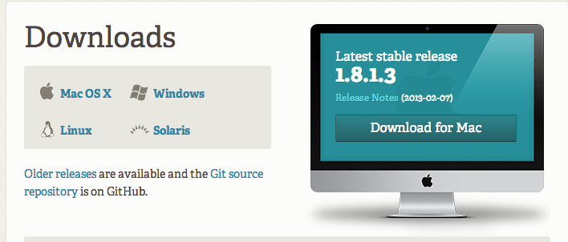
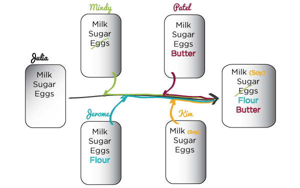
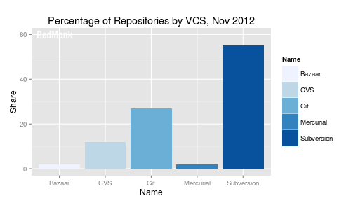

Hey Early Birds!
Get a jump on the day and install git now!
http://git-scm.com/downloads
Intro to Git and Github
slides: http://cherimarie.github.io/gdi-2day-core-git-github
Welcome!
Girl Develop It is here to provide affordable and accessible programs to learn software through mentorship and hands-on instruction.
Some "rules"
- We are here for you!
- Every question is important
- Help each other
- Have fun
Welcome!
Tell us about yourself.
- Who are you?
- What do you hope to get out of the class?
- Who was your favorite fictional character as a child?
What we will cover today
- What is version control?
- Basics of git -- the essential commands
Real talk
Git isn't simple. Like most powerful tools, it's complex and takes some time to master.
What is version control?
Version control allows you (and your team) to do two powerful things
Collaborate
Create anything with other people, from academic papers to entire websites and applications.
Track and revert changes
Mistakes happen. Wouldn't it be nice if you could see the changes that have been made and go "back in time" to fix something that went wrong?
Working without Version Control

The Horror!
Working with Version Control
Rainbows and bunny rabbits!
Brief history of Version Control
1990s -- CVS (Concurrent Version Systems)
2000s -- SVN (Apache Subversion)
2005 -- Git (well, Git)
Version Control Types
Centralized Version Control
Examples: CVS, SVN
One central server, each client (person) checks out and merges changes to main server
Distributed Version Control
Examples: Git, Mercurial
Each client (person) has a local repository, which they can then reconcile with the main server.
Version Control Distribution
Version Control Distribution Change

Intro to Git
Goals of Git Design
- Fast -- add to your team and code base quickly
- Distributed (see slide above) - you can work without a network connection
- Each commit has a unique identifier, a SHA (Secure Hash Algorithm, a.k.a hash)
- Everyone has a local copy of the history
Installation and Setup
Install git
http://git-scm.com/downloads
Installation and Setup
Configure Git with your name and email
# I'm a comment! Don't enter me in command line. Do enter lines that start with a $, but don't type the $.
$ git config --global user.name "Your Name Here"
# Sets the name git associates with your commits
$ git config --global user.email "your_email@example.com"
# Sets the email git associates with your commits
$ git config --list
# Shows your configuration settings
Installation and Setup
An SSH key is like a secret handshake between your computer and Github. It allows Github's servers to verify your identity via public-key cryptography and challenge-response authentication- not via you typing in your Github password. It's super secure and not too difficult to set up.
More info about SSH keys.Installation and Setup
Setup ssh keys following this guide:https://help.github.com/articles/generating-ssh-keys
Your first Local Repository
# change to root/home directory
cd ~
#or
cd Users\username
# create and move to a "working directory"
mkdir my-repo
cd my-repo
#initialize directory as a Git repository
git init
Add files
Create a new hello.txt file in your my-repo directory, then check repo status
touch hello.txt
git status
Tell Git to track our new file
git add hello.txt
git status
File is now tracked by Git!
Changes and commits
Open hello.txt and add some text, then check your git status
git status
Stage and commit the change
git add hello.txt
git commit -m "Added first file to repository."
What did we just do??
How is this all different than just saving a file?
- When we add a file, we tell Git to track the current state of it. This is also known as 'staging' the file.
- A commit saves changes made to staged files, not the whole files. The commit allows us to track which changes were committed when and by whom.
Look at our progress
git log
commit [SHA HERE]
Author: Your name
Date: [DATE HERE]
Added first file to repository.
Cool! We'll be using that SHA later...
Git is helpful
Always read the output of running git commands. They may look a little intimidating, but they contain all sorts of useful information. When in doubt, run:
git status
Git flow
This is the general workflow in a Git repository
git init #just once, to initialize
#do some stuff to files
git status #what's up, git?
git add [filename] #stage changes to a file
git commit -m "" #commit a set of changes
git status #what's up, git?
Undoing Changes
Undoing local changes
If you've added some new text to hello.txt, but not yet staged it, just run:
git checkout hello.txt
hello.txt is reset to its state at the last commit - your changes are gone!
Undoing Changes
Un-stage a file
If you already staged hello.txt, run:
git reset hello.txt
hello.txt is no longer staged, you can make whatever changes you like to it, and re-stage when it's ready.
Undoing Changes
Delete a staged file
If you've already staged hello.txt, but want to delete it instead, run:
git rm -f hello.txt
The file is deleted, and its deletion will be part of your commit.
Undoing Changes
Undo staged changes
If you've made some changes to hello.txt and staged it, but want the changes to disappear, run:
git reset hello.txt #unstage
git checkout hello.txt #reset
hello.txt is unstaged and reset to its state at the last commit - your changes are gone!
Undoing Changes
Undoing committed changes- 1
If you've made changes and committed them, you can revert all the changes that happened in a specific commit by running:
git log #shows log of commits
git revert [SHA] #undoes specified commit
This doesn't have to be your most recent commit- you can revert any commit. It will just undo the entire set of changes that were included in that commit.
Undoing Changes
Undoing committed changes- 2
You can roll back your repo's state to where it was after any previous commit by running this with the SHA of the commit you'd like to reset to:
git log #shows log of commits
git reset --hard [SHA] #resets repo
This rolls back all changes since the specified commit - be careful! This isn't often used in real life.
Branching
- Develop different code on the same base
- Conduct exploratory work without affecting the work on master branch
- Incorporate changes to your master branch only when you are ready
Branching
Create a new branch called feature_1
git checkout -b feature_1
Make a change to hello.txt, then add and commit.
Branching
Switching branches
See all branches. Branch with * is active.
git branch
Switch to the master branch.
git checkout master
You'll notice the changes from feature_1 branch aren't there.
Merging
Merge to get changes from one branch into another*
Switch to master and merge in the feature_1 branch
git checkout master
git merge feature_1
Now if you check out hello.txt, you'll see the changes you made in the feature_1 branch.
*rebase is another option, but will not be covered in this workshop
Merging
Merge conflicts...
Change first line in hello.txt in master branch, then add and commit it.
Then switch to the feature_1 branch and change first line in hello.txt, and add and commit it.
Merging
Merge conflicts, cont.
Merge the master branch into feature_1 branch
# on feature_1 branch
git merge master
You will be notified of a conflict. Go to the file, fix the problem and delete the helpful comments Git added. Then commit your edits.
Conflict resolved!
Merging
Merge conflicts, cont.
Note: somtimes, conflicts cause the files to automatically open in the Vim text editor. It looks just like a terminal window and has no obvious way to exit. Don't panic. Just type :q[enter] to exit it.
Questions?
Thanks!
Cheri Allen
@cherimarie